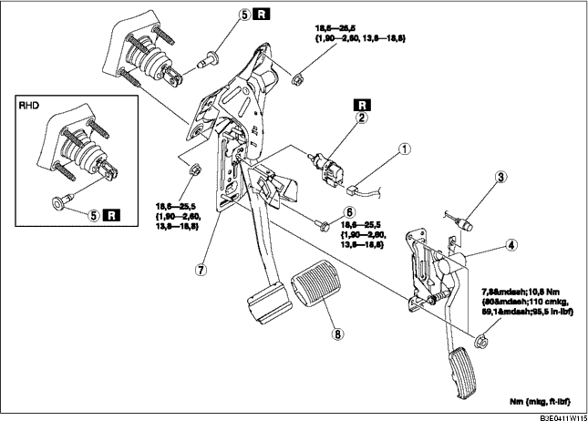

1. Für LHD, die Batterie und den Batterieträger ausbauen. (Siehe BATTERIE AUSBAUEN/EINBAUEN [ZJ, Z6].) (Siehe BATTERIE AUSBAUEN/EINBAUEN [LF].)
2. Die Bremsleitung lösen (Hauptbremszylinderseite). (Siehe HAUPTBREMSZYLINDER AUSBAUEN/EINBAUEN.)
3. Gemäß der Reihenfolge in der Tabelle ausbauen.
4. Der Einbau erfolgt in umgekehrter Reihenfolge.
5. Den Gaszug einstellen. (Siehe GASZUG PRÜFEN/EINSTELLEN [ZJ, Z6].) (Siehe GASZUG PRÜFEN/EINSTELLEN [LF].)

.
|
1
|
Steckverbinder, Bremslichtschalter
|
|
2
|
Bremsschalter
(Siehe Einbauhinweis für Bremslichtschalter.)
|
|
3
|
Gaszug
|
|
4
|
Gaspedal
|
|
5
|
Verbindungsstift
|
|
6
|
Schraube (LHD)
|
|
7
|
Bremspedal
(Siehe Ausbauhinweis für Bremspedal.)
|
|
8
|
Pedalgummi
|
1. Die Montageschrauben des Bremspedals herausdrehen.
2. Den Bremskraftverstärker zur Fahrzeugfront bewegen, wo die Gabel des Bremskraftverstärkers nicht mit dem Pedalarm in Berührung kommt.
3. Das Bremspedal ausbauen.
1. Für LHD, den neuen Verbindungsstift durch Ausrichten der Stiftbohrungen des Bremspedals und der Gabel des Bremskraftverstärkers einsetzen.
2. Für RHD, den neuen Verbindungsstift durch Ausrichten der Stiftbohrungen der Bremspedalhalterung und der Gabel des Bremskraftverstärkers einsetzen.
3. Prüfen, ob der Verbindungsstift die Gabel des Bremskraftverstärkers vollständig berührt.
1. Bremspedal prüfen. (Siehe BREMSPEDAL PRÜFEN.)
2. Bei vollkommen freiem Bremspedal einen neuen Bremsschalter in die Montageöffnung am Bremspedal einsetzen.
3. Den Bremslichtschalter durch Drehen gegen den Uhrzeigersinn um 45° einrasten.